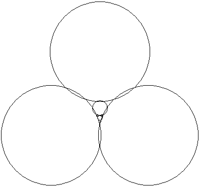

| Dataset 4 1 unbounded region |
Dataset 5 1 unbounded region |
| Dataset 6 1 unbounded + 2 bounded regions = 3 |
Dataset 7 1 unbounded region + 3*2 bounded regions on the outsides of the big circles = 7 |
| Dataset 8: 10 rows of 10 circles making 6 patterns of
holes repeated 9 times with 1 unbounded region makes 1+6*9 = 55. (The circles are listed in the dataset in pseudo-random order.) |
| Dataset 9: All |
| Dataset 9: Detail in space between four largest circles |
Dataset 9: Detail Inside the next four circles |
| Dataset 10 and 11: All (look alike at this scale) |
Dataset 10 and 11: Left blob (Still look alike) |
Dataset 10 and 11: Lower blob (Still look alike) |
| Dataset 10 only: Left Blob Detail | Dataset 10 only: Lower Blob Detail |
| Dataset 11 only: Left Blob Detail | Dataset 11 only: Lower Blob Detail |
|  | |
| Dataset 12: All | Dataset 12: Detail Below the Middle |